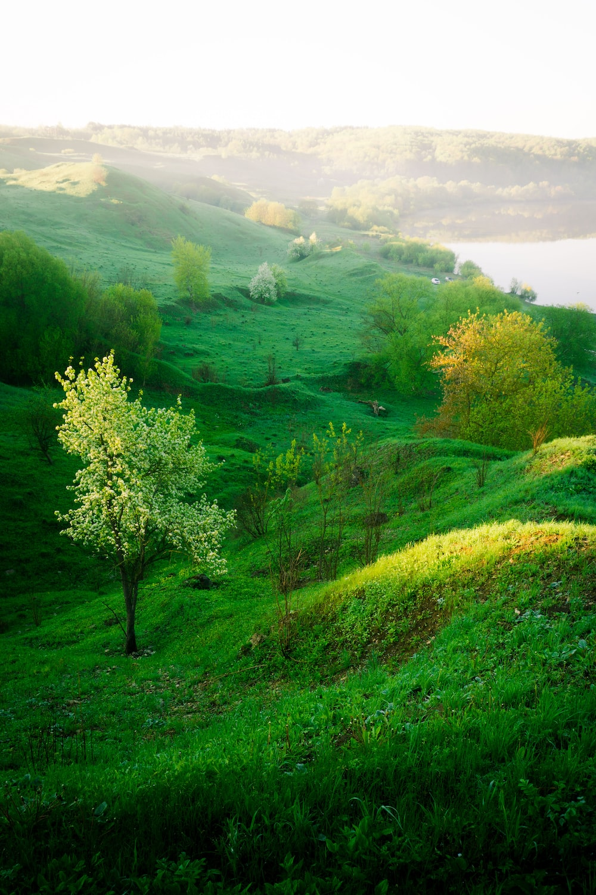

5st march, 2018
WHAT IS NATURE
There is a great deal of talk and endeavour to protect nature, the animals, the birds, the whales and dolphins, to clean the polluted rivers, lakes, fields and so on. Nature is not put together by thought, as religion and belief are. Nature is the tiger, that extraordinary animal with its energy, its great sense of power. Nature is the solitary tree in the field, the meadows and the grove; it is that squirrel shyly hiding behind a bough.
Nature is the ant, the bee and all the living things of the earth. Nature is the river, not a particular river, whether the Ganga, the Thames or the Mississippi. Nature is those mountains, snow-clad, with dark blue valleys and range of hills meeting the sea. The universe is part of nature. One must have a feeling for all this, not destroy it, not kill for one’s pleasure or one’s table. We do kill cabbages, the vegetables we eat, but one must draw the line somewhere. If you do not eat vegetables, how will you live? So one must intelligently discern.

7st August, 2021
BEAUTY OF NATURE
Nature has given us so much that we cannot even imagine. Life on this earth is possible only because of nature. There are many other planets in the universe but without this nature life is not possible there. Thus nature is the basis of our life. Nature is not the same everywhere on earth. According to the place, nature changes its appearance and according to that place provides us with resources, as well as provides comfort to our mind, our eyes.
Nature gives us so much, so it is our duty to respect it knowing its importance and not to destroy it for our selfishness. So that the children of man can also enjoy its beauty and take advantage of it, otherwise one day will be when people will be able to see and feel the beauty of this nature on the computer itself.

9st may, 2022
OUR APPROACH:LINKING LANDSCAPE TO WILDLIFE
Our goal with this initiative is to increase the pace and scale of conservation actions that sustain wildlife populations and improve habitat corridors throughout the world. We will:
work with communities to understand the importance of expanding and improving habitat corridors throughout the world,
map habitat changes and extend our wildlife camera network to monitor trends in wildlife diversity, behavior, abundance, and movement,
train and convene landowners and residents to develop and implement wildlife-friendly practices, and
share models for regeneration of healthy wildlife corridors that integrate watershed protection and fire resilience among regional, national, and global partners.